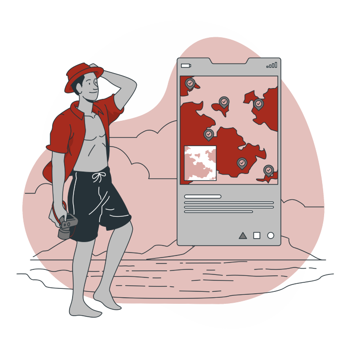

Au sein du groupe EL-BAHDJA Voyages,ce sont des spécialistes par distination qui sont a votre service pour organiser votre voyage.Leur expérience , la formation qu'ils ont recue , leur passion du voyage ou d'un pays en ont fait des experts.Ils sont a votre dispositions pour élaborer,avec vous , votre voyage et vous conseiller les meilleurs hotels ou itinéraires.
Situated on the east bank of the Chao Phraya River, this new urban retreat offers impressive views of the lively Thai capital. There are four dining venues, including one overseen by chef Mauro Colagreco of France's Michelin three-starred Mirazur, and a swank spa with treatments, therapies, and fitness classes.
Part of the Virgin Limited Edition collection, Sir Richard Branson's majestic safari camp in the Masai Mara is "just perfect," according to one voter. The seemingly space-age tents somehow rise up out of the landscape and blend in with it simultaneously. Wildlife remains abundant in the surrounding bush.
The most recent entry to the Nayara brand has all the details covered. Cliff-top safari tents have spacious bathrooms with soaking tubs, private decks, and infinity plunge pools that overlook the lush Costa Rican rain forest and the imposing Arenal Volcano.
Japanese architect Kengo Kuma designed this emerald glass building with subtle references to traditional Chinese architecture. Rooms are minimalist with luxurious touches like oak soaking tubs and plush beds, the staff is über-attentive, and the location is close to all the Beijing attractions.